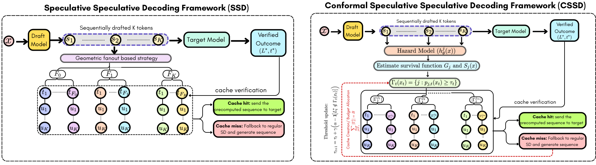

AIMES
Adaptive Multi-Value Control in LLMs via Causal Activation Steering
Adjusting activation interventions during generation to guide LLM responses across multiple human values.
|
School of ECSE University of Arizona Tucson, AZ 85721 |
|
| payelb@arizona.edu | |
| Tucson, Arizona, United States | |
| Google Scholar | |
| GitHub | |
Ph.D. Candidate
Electrical and Computer Engineering
The University of Arizona
I am a Ph.D. candidate in the School of Electrical, Computing, and Software Engineering at the University of Arizona, advised by Dr. Ravi Tandon. I develop methods for trustworthy and efficient AI, focusing on LLM alignment, privacy, and inference.
My research focuses on trustworthy machine learning, with interests in LLM alignment, privacy-preserving learning, efficient inference, and causal discovery. I develop methods for learning from human feedback, controlling language model behavior, and improving the privacy and efficiency of learning systems. My recent work includes reward modeling with limited preference data, adaptive steering of multiple human values in LLMs, and conformal methods for speculative decoding. I also investigate differential privacy for LLM alignment and causal graph discovery.
Previously, I worked as an Associate Software Engineer at Bosch Global Software Technologies. I hold a B.Tech. in Electronics and Telecommunication Engineering from KIIT University, India.
Adaptive Multi-Value Control in LLMs via Causal Activation Steering
Adjusting activation interventions during generation to guide LLM responses across multiple human values.

MARS: Margin and Semantic-Aware Data Augmentation for Reward Modeling
Using reward margins and semantic differences to allocate preference-data augmentation.

Conformal Speculative Speculative Decoding
Using context-dependent rejection modeling and conformal calibration to select speculative cache entries.
Asilomar 2026 · Oral presentation
Explore projectAsilomar 2026 (Oral): Our work Conformal Speculative Speculative Decoding (CSSD) was accepted for an oral presentation at the 2026 Asilomar Conference on Signals, Systems, and Computers.
IEEE Access 2026: Our work Learning to Diagnose Privately: DP-Powered LLMs for Radiology Report Classification was accepted in IEEE Access.
EACL 2026: Our work STAMP: Selective Task-Aware Mechanism for Text Privacy was accepted to EACL 2026.
NeurIPS 2025 AI4NextG Workshop: Our work Conformal Sparsification for Bandwidth-Efficient Edge-Cloud Speculative Decoding was accepted to the AI4NextG workshop.
TMLR 2025: Our work PROPS: Progressively Private Self-alignment of Large Language Models was published in Transactions on Machine Learning Research.
ECE Graduate Poster Symposium 2024: Received the People's Choice Award for presenting CURATE: Scaling up Differentially Private Causal Graph Discovery.
People's Choice Award, ECE Graduate Poster Symposium 2024, University of Arizona, for the research presentation CURATE: Scaling up Differentially Private Causal Graph Discovery.
KIIT Merit Scholarship, Kalinga Institute of Industrial Technology, for obtaining the highest CGPA (10.0/10.0) in the academic year 2017–2018.